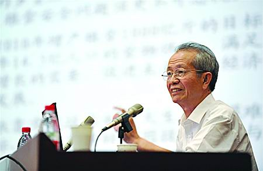

黄大昉：我为什么支持转基因

转基因大豆波澜再起，作为国家转基因生物安全委员会委员，力挺转基因作物产业化的黄大昉被“反转派”称作“首席转基因推手”、“美国转基因间谍”。黄大昉在接受《中国科学报》记者采访时说，国内外“转基因争议”从来就不是简单的学术之争，而有十分复杂的经济、社会和政治背景。
就争议的激烈程度和影响范围而言，恐怕很难找到第二个高技术领域，能够像转基因一样如此敏感、复杂却又难以回避。
6月13日，中国农业部批准发放三个转基因大豆进口安全证书的消息刚一发出，一直暗流涌动的转基因争议再掀波澜。环境影响和食用安全历来是“挺转派”和“反转派”的分歧焦点，然而在最近的这次“转基因风波”中，双方却似乎达成了一个相同的看法：转基因大豆的进口在冲击中国农业市场。
因在国内力主转基因作物产业化，中国农业科学院研究员黄大昉一直被外界视为“挺转派”的代表性人物。面对争议声中举步维艰的事业，他深感忧虑：“转基因属于高技术领域，买不来也换不来，只能靠我们自己发展。与国外技术研究和产业化的差距一再拉大，国际竞争中我们怕是会失掉自己的阵地。”
从事转基因研究和推广工作近30年，黄大昉见证了这项技术从学术界走向社会大众过程中所经历的风风雨雨，也切身体会到僵持不下的争议给自己事业带来的巨大冲击。
亲历转基因乱象
“走到今天，转基因的问题渗透进很多非科学的因素，成为一种乱象。这仅仅影响到我个人倒也无所谓，但如果影响到科学的发展，那就不好了。”波澜再起，黄大昉在接受《中国科学报》记者采访时说，国内外“转基因争议”从来就不是简单的学术之争，而有十分复杂的经济、社会和政治背景。
上世纪80年代，分子生物学飞速发展，以访问学者身份前往美国康奈尔大学从事微生物分子遗传研究的黄大昉首次接触到转基因技术。在孟山都公司介绍转基因抗虫棉的一场学术报告上，他领略到转基因的“巨大威力”，并考虑将自己的专业领域从微生物拓展到农作物。
“从棉花本身的种质资源出发，是找不到抗虫办法的。将外部的抗虫基因转入棉花，就能彻底打破这一屏障，见效很快。”从事植物病理学研究20多年的黄大昉感到豁然开朗，决心回国后一定要将这项先进的基因工程技术加以应用。
彼时，转基因被视为新技术革命的一个部分，其发展并不为社会公众广泛了解，学界内外也未对其安全性提出过多质疑。在此背景下，我国农作物转基因研究开始提速，一系列研究项目先后被列入“863”计划。
直到上世纪90年代初，世界第一大烟草厂商菲利普·莫里斯公司的一次来华访问时，转基因作物安全性问题才引起了中国科学家的重视。在参观位于河南省的一片抗病毒转基因烟草试验田时，来访的美方人员提出，转基因烟草的种植因健康威胁在美国引起社会争议，已被严格限制，希望中方也能尽快停止种植试验。
“事实上，他们的建议更多是出于商业利益的考虑，但也确实让我们认识到，转基因对环境和安全是有风险的。”当时，黄大昉作为“863”计划生物技术领域专家委员会委员，曾一同前往试验田考察。从那时起，他意识到需要“两手抓”—— 一方面积极推动技术发展，另一方面需要保障环境和健康安全。
1996年，农业部颁布《农业生物基因工程安全管理实施办法》，这成为我国第一个转基因安全管理条例。黄大昉参与了这份条例的调研和制定，并开始涉足转基因安全性评价和管理工作。
也正是1996年，全球转基因农业的发展迎来分水岭——在欧洲，以绿色和平为代表的非政府环保组织成为反对转基因作物的急先锋。疯牛病等食品安全事件的爆发，加深了人们对转基因作物的担忧和抵制。“事实上，欧洲之所以反对转基因，原因也很复杂。除了安全问题，还有国际贸易问题，一些宗教和政治集团也需要一个博弈的工具和借口。”黄大昉说。 “上世纪70年代转基因技术成熟，80年代作物问世，90年代产业化加速。1996年，全世界转基因作物种植面积达到170万公顷，被视为大规模产业化的重要标志。”黄大昉认为，随着转基因技术的效益越加明显，欧美地区一些环保组织的反对声浪随之开始高涨，其影响力逐渐蔓延至全球。
1998年，我国独立自主研发的转基因抗虫棉正式得到国家发明专利授权，曾参与成果鉴定的黄大昉为之振奋。然而很快，国内就有人提出质疑，称中国的转基因棉花已经对生态环境产生了严重破坏。
“他们的依据是那些国外传闻，比如害虫能够产生抗性、植物间发生基因漂移、影响生物多样性等。”黄大昉说，这些没有根据的炒作让科研人员很气愤，但还是遵循国家的安全管理条例作了大量研究，证实没有问题后，抗虫棉最终在争议声中得以推广。
黄大昉告诉记者，早在那时，一些研究抗虫棉的科学家就已开始背负骂名，称他们是“汉奸”、“美国贼”等。但黄大昉没有想到的是，这样的骂名和矛头最终也会指向自己。
2009年，我国批准了自主研发的两个转基因水稻和一个转基因玉米的安全生产证书，随即爆发了声势浩大的反对浪潮。
“光是水稻，我们就搞了11年安全性评价。可是再谨慎，反对的力量也在不断壮大，最终还是爆发出来。”作为国家转基因生物安全委员会委员，力挺转基因作物产业化的黄大昉被“反转派”称作“首席转基因推手”、“美国转基因间谍”……各种指责扑面而来。
“表面上看，好像科技界有两种声音。事实上，这已经不仅仅是科技界的事情了。”黄大昉看到，质疑已经超越了学术边界，被染上了一层“阴谋论”色彩。而对于普通百姓而言，则是“宁可信其有，不可信其无”，更不知该相信谁。
“我觉得事实被歪曲了”
反对的力量，最终冲击到转基因作物研究领域科技人员的信心，很多人开始感到无奈而忧虑。
“原本是抱着国家农业科技进步的愿望，为增强国家实力做科研，结果受到各种各样的质疑甚至辱骂，心里肯定不高兴。”黄大昉直言，业内人士倍感压力，看到一个接着一个研究成果出炉，同时又在一边慨叹：“原来那些好成果都不能产业化，新的成果又有何用？”
尽管争议不断，然而单就科技界内部的转基因研究而言，国家并未停止支持，这多少让科技人员感到幸运。2008年，作为国家中长期重大科技项目之一的“转基因生物品种培育科技重大专项”正式启动，计划共投入两百多亿元人民币。
很多人的看法是，科学家进行研究并无大碍，但只要提出产业化，立马就会予以反对。
“假如转基因作物真有说不清楚的问题，那我们就发展慢一点，先把问题搞清楚。但现在真实的情况是，转基因作物问世30多年，大规模产业化17年，全世界有1.7亿公顷的转基因作物种植，每年也有上亿人都在吃，产品贸易量达到几亿吨，目前确实没有出现大家公认的问题。”黄大昉拿出一连串数据，说这些事实往往被忽视，反倒是一些传说和谣言被四处传播。
黄大昉所担心的是，伴随非理性争议而来的犹豫不决会让我国农业科技的发展和推广停滞不前。“确实不仅仅是在考虑自己的科研事业，更重要的是它对国家的影响，我觉得这个问题非常严重。”
面对现状，很多科技人员选择埋头做科研，并不愿意多说话。他们觉得如此复杂的问题，是科研人员所无法解决的，“上面怎么说，怎么办就是了”。
黄大昉则选择了积极发声，在各种场合介绍转基因技术，试图澄清谬误，努力推动社会支持。在几次科普讲座现场，他也遭遇“反转派”人士闹场，受到当面指责。有人劝他说，人家那么骂你，又何必如此积极地站出来。
“我这个人可能就是爱较真，认死理。我觉得事实被歪曲了，特别是那些谣言，越不出来指明，越觉得自己心里很难安定。”对于扣在黄大昉头上的那些“大帽子”，他说自己其实并不感到难受，只是感觉可笑，“如果我的观点确实站不住脚，或者确实抓住我有不好的事情，那骂也就骂了”。
“你说我是卖国贼，我觉得我是爱国者，我相信我做的事情是正义的。”黄大昉说他反倒是“越骂越勇”，对方不占理，就要让大家看看真理在谁手里，“但没必要去跟他们对骂”。
采访中，黄大昉并不避讳那些尖锐的问题，始终直率而平静。他觉得不论作为科学家还是作为一个普通人，最重要的就是实事求是，维护真理是基本的科学精神。
“对于转基因，至今确实没有发现无法控制的问题，只是有风险，需要作出很好的安全性评估和管理。怎么能把我们的认知、领导的决策建立在虚假的基础上呢？”在黄大昉看来，这对于任何一个科学家而言，都是不应该允许发生的事情。
“对于未来，我是乐观的”
担任全国政协委员期间，黄大昉曾在农业部的组织安排下，参与有关转基因作物问题的政协委员对话，一些政协委员同样提出了诸多质疑。
“我们一一解释，试图消除他们心中的疑虑。”黄大昉通常会得到这样的反馈：“你们为什么不早说？早说就不会有这些问题了。”
相对于那些“闹场”的意外，黄大昉经历了更多这样的场面，他也很享受这个过程。“由于我们的工作不到家，没有把真实情况充分告诉大家，引起了误会，所以我觉得更有责任去增进彼此的理解。”他体会到，一些似乎是反对转基因的人士，其实也有着良好的愿望和出发点。
“即便是有恶意的攻击，从反面讲，也在激励你坚守下去，不要自己退缩。何况不能一概否定所有的争议。”质疑声中，黄大昉也听到了不少理性的声音，并且给了他很多启示。例如，一些从事环境保护的科学家声明，他们提出质疑并不是要反对生物技术的研究和开发，只是担心我们国家的安全评价和管理经验不足，希望提高警惕。
在黄大昉看来，来自社会公众的担忧更多源于不了解真实情况。近年来，他把自己的工作重心放在了科普方面，尝试传播“来自转基因科学界的正能量”。
“高技术发展越来越快，可是我们的知识基础和对科学的认知，远远落后于技术发展的速度。”年过七旬，黄大昉说自己能做一点科学传播的工作就很高兴了，并且希望科学家能够形成合力，通过学会的力量开展更为有效的活动。
历经一次又一次风浪，转基因作物的发展至今处于巨大的争议漩涡中，但黄大昉相信，在更长远的历史尺度上，这将只是短暂的“徘徊期”。
“对于转基因作物的发展，我有这个信念。对于未来，我还是乐观的。”黄大昉说他的判断，是基于中国的国情和转基因技术在全世界发展的真实情况。
前不久，黄大昉在题为《我国农作物生物育种发展战略思考》的文章中，正是以大豆为例，说明了转基因作物产业化发展的不可逆转之势。
黄大昉在文中说，近年因我国食物消费结构的改变，饲料蛋白和食用油需求急速增长，而国内大豆种植面积有限且品质产量均不及国外优质高产转基因品种，导致进口大豆数量剧增，2012年进口数量已达5838吨，占世界大豆出口总量的60%，不仅国内自给率降到18%，且大豆加工业也几乎被国外资本控制。
这段话，为理解农业部最新批准发放的三个转基因大豆进口安全证书，提供了一定的背景事实。
“生物技术的发展成为必然规律，不是因为反对就能停下来。我们应该尽量少走弯路，少受损失，少碰到大豆这种尴尬而无奈的局面。”黄大昉不止一次提醒，发展转基因作物育种是保障我国粮食安全的战略选择，而现在正处于关键期。
20多年前，在黄大昉决心转向转基因农作物研究时，他没有想到这项事业会引起如此巨大的争议，更不曾料到，自己会在持续不断的争议中被推至风口浪尖。
“自己的科研领域受到如此特别的关注，究竟是一种幸运还是不幸？”
“如果能够重来，我还会作出这样的选择，因为它意义重大。”记者对面的黄大昉没有过多思考，他如此回应记者最后的提问，“任何科学技术的发展，都要经过争议，只是面对争议，不同人有不同的态度。”
“我的整个事业发展确实受到了影响，但是它发人深省。”黄大昉补充说，科学家都有自己理想的目标，如果你认准了，即使碰到困难也决不会动摇。
记者手记
让争议回归理性
转基因是个极为复杂的话题，网络中充斥的各种论战就是明证。它始于科学技术，却与经济、社会、政治乃至宗教、伦理、哲学生发出千丝万缕的关联。
尽管它如此复杂，却并不妨碍人们为论战双方作出“非黑即白”的二元划分，简单归结出“反转派”和“挺转派”的群体性标签。而处于中间地带者，则成为不明真相的群众，在围观中无所适从，不知该“挺”还是该“反”。
如一位多年从事转基因报道的媒体同行所言，在转基因领域，最不缺乏的恐怕就是来自各方的声音。
然而吊诡的是，“挺”与“反”这两种看似水火不容的立场，却在某种程度上消解了转基因问题的复杂性。不同立场下，个体的知识背景、职业身份、利益诉求等等复杂的问题，都被有意或无意地忽视了。
于是，争论演变为“自说自话”，互相的聆听和理解很难成为可能。也因如此，群体标签下那些鲜活的个体经验被遮蔽了，其中就包括致力于转基因研究和推广的科学家们。
黄大昉，便是其中具有代表性的一位。通过采访，我们试图了解这位被外界冠以“挺转派”之名的科学家，其真实的经历和观点。常年从事转基因作物评估和管理工作，也让他对这一领域科技人员所面临的处境有着更深地理解和体会。
我们看到，黄大昉并没有激进的观点和行为，他更希望传达这样一种理念：如同一切先进技术一样，积极、理性的学术争论也会有利于转基因这一生物技术的进步和完善。
更为重要的是，黄大昉积极致力于转基因基本知识和事实的普及，这让我们明了：在复杂的转基因争论漩涡中，只有立足于事实之上的质疑态度和理性辩论，才可能经得起推敲。而这，也是“发声者”所应遵循的基本原则。
希望人们在选择“挺”或“反”之前，都能尽己所能去了解事实，尽管这对你将持有何种立场恐怕毫无帮助。但是，如果你努力了解了事实，
(文章来源：中国科学报，作者：记者 郝俊)